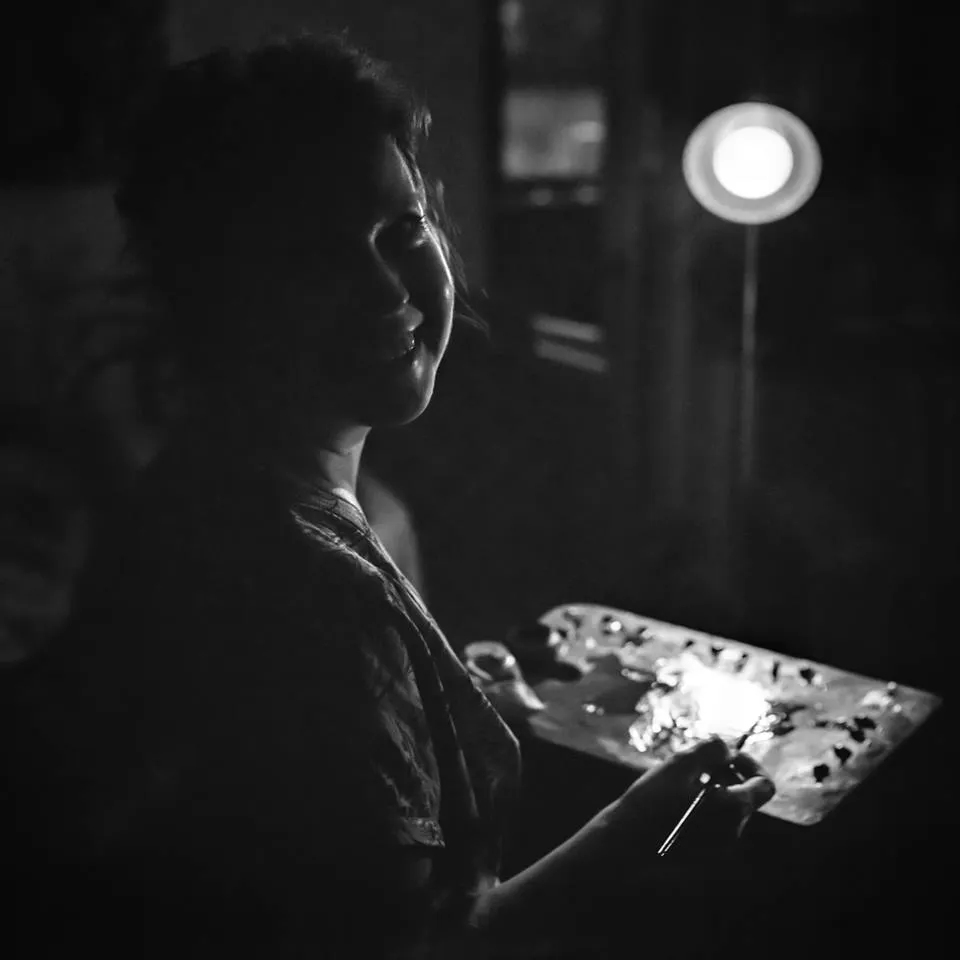

In Brief
Svetlana Osipova is an artist based in St. Petersburg, Russia. She paints still lifes, landscapes, and abstract works. Svetlana has a deep passion for portrait painting, where she feels the strongest connection with her subjects.
Inspired by the unique character of each person, her work seeks to reveal the divine spark within every human being. Through her careful attention to the expressive quality of line, Svetlana strives to emphasize the beauty, love, and kindness that exist within each of us.
Devoted to personal growth and the pursuit of artistic excellence, Svetlana seeks to create works that inspire and celebrate the infinite universe.
Artistic vision
Svetlana Osipova is a dedicated portrait artist whose work explores the human experience, revealing the unique beauty and character of each person she portrays. Although she also explores still life and landscape painting, portraiture remains her greatest passion. For her, every face tells a story, and every story is a window into the infinite universe that lives within us all.
Her approach to portraiture is deeply intuitive and guided by a desire to understand each person on a spiritual level. She believes that every one of us carries a spark of the divine — a fragment of the infinite universe — and it is this essence that she seeks to capture in her work.
By focusing on the most beautiful and noble aspects of her subjects, she seeks to reveal the love, peace, and kindness that she believes are inherent in all people.
An important part of her artistic journey is her pursuit of ideal fluidity and expressiveness in line. For Svetlana Osipova, the flow and grace of every line in a painting are essential to conveying the inner beauty of her subjects. This technical mastery allows her to create works that are not only visually striking, but also resonate on a deep emotional and spiritual level.
Her ultimate goal as an artist is self-development through art: to continually grow and refine her skills while remaining committed to the values of beauty, love, and peace. Through her work, Svetlana hopes to inspire others to recognize and appreciate the kindness within themselves and in the world around them, contributing to a more harmonious and compassionate society.
Education
N. K. Roerich St. Petersburg Art College
Ilya Repin St. Petersburg Academy of Arts
Internship: “The History of Painting Techniques: 17th Century, Oil Painting on Canvas”
Amsterdam, Amsterdam–Maastricht Summer University, 2006
Copy of "The Laughing Drinker" by Frans Hals
Internship: “The History of Oil Painting: A Comparison of Rembrandt and Rubens”
Amsterdam, Amsterdam–Maastricht Summer University, 2007
Copy of a fragment from @Portrait of Johannes Wtenbogaert@ by Rembrandt
Exhibitions
"Where Are You?"
Mansarda Anticafé, Marata Street, St. Petersburg
March 2015
"What Is Love?"
“Igry Razuma” Creative Cluster, Delos Space, Dostoevsky Street, St. Petersburg
July 2015
"Portraits Speak"
State Library, Torzhovskaya Street, St. Petersburg
October 2015
"Portrait"
Library on Industrialny Prospekt, St. Petersburg
December 2019
"An Unusual Portrait"
Staraya Derevnya Restoration and Storage Centre, The State Hermitage Museum, St. Petersburg
October 2023 – January 2024
